Getting Started with

Github
&

2017-10-02
Getting Started with
Github
&

What is Github??Github is web-based GIT repository hosting service. It offers all of the distributed revision control and source code management (SCM) functionality of Git as well as adding its own features - for example, native interpretation of markdown which is MUCH easier to code/write than HTML - very lightweight code for creating documents.
Github, unlike Git, which is strictly a command-line tool, GitHub provides a Web-based graphical interface and desktop as well as mobile integration. Github provides access control and collaboration features such as bug tracking, feature requests, task management, and wikis for every project.
Go to https://github.com/
You can register one Github account per email.
Once you get logged in to your Github Account, go to your account settings to customize your photo, bio, email, website URL, and more…
When you first get started you won't have any repositories, but we will be creating repositories for each project.

…next let's install Git…
GIT is a widely used source code management system for software development. It was designed and developed in 2005 by Linux kernel developers (e.g. Linus Torvalds) for Linux kernel development.
GIT is a distributed version control system with complete history & version-tracking capabilities. [Other version control systems you may have heard of are Subversion, CVS, Perforce, and ClearCase]
GIT is FREE (cost) & freely distributed under the terms of the GNU General Public License version 2. More @ https://git-scm.com/
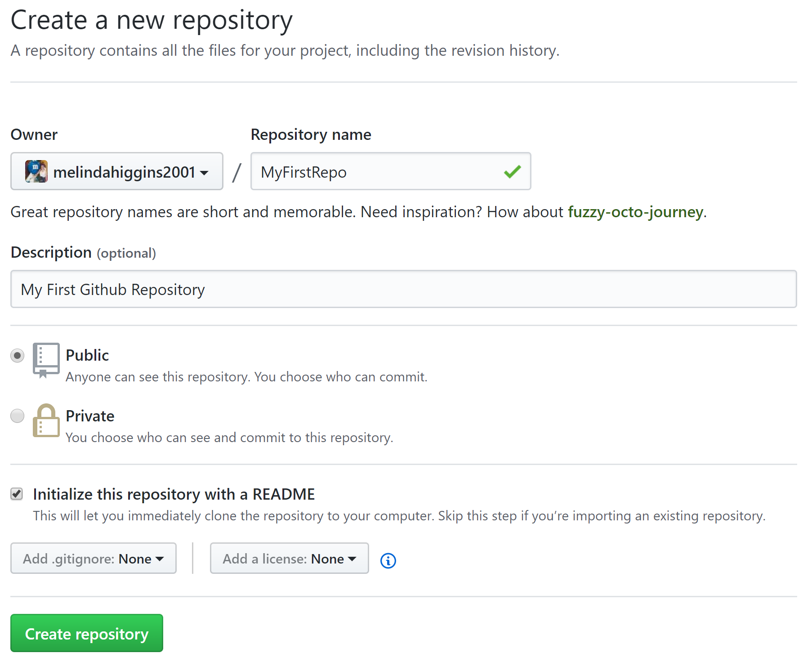
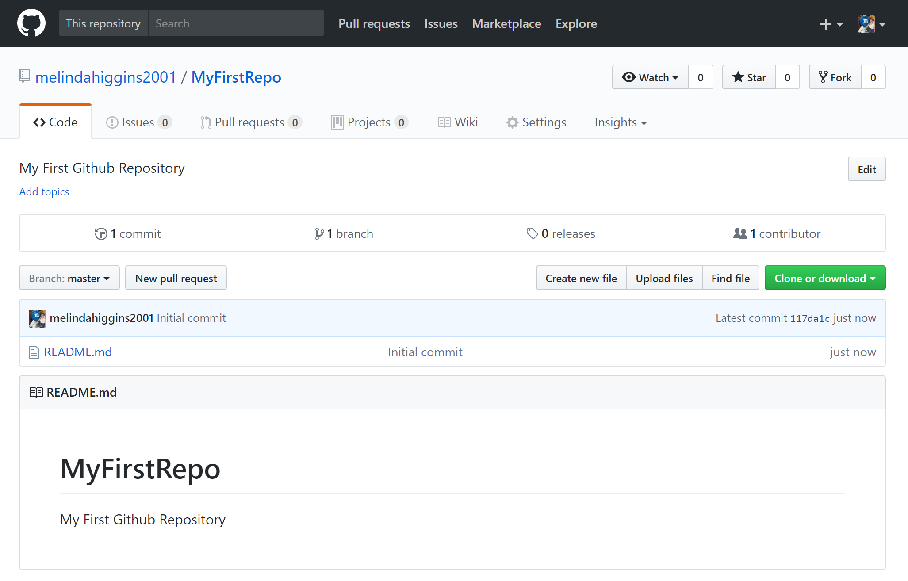
C:\RepTemplatescd C:\RepTemplates (as shown on next slide)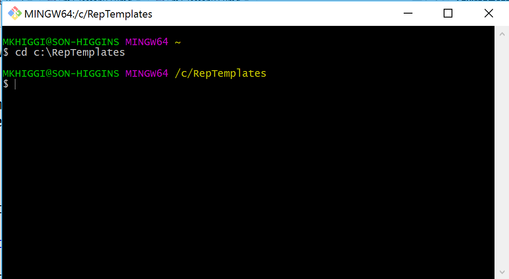
To get more information about the Git commands we're using and getting connected to your Github account, we will refer to the details provided in the "Happy Git and GitHub for the useR" book by Jenny Bryan. It is available online for FREE at http://happygitwithr.com/
In this lesson we will cover some of the information in these chapters:
[Be sure you are already logged into your Github account.] First, introduce yourself to Git - type the following 3 commands in your Git Bash window. Put in your name and email you used to set up your Github account.
git config --global user.name 'Jennifer Bryan' git config --global user.email 'jenny@stat.ubc.ca' git config --global --list
Keep your Git Bash window open.
The pushmi-pullyu was a fictional animal in the Doctor Dolittle series of children's books by Hugh Lofting with two heads on opposite ends of its body.
We will be PUSH'ing and PULL'ing content in and out of your project repository between your local computer and your Github account using Git version control.
A PULL moves content from the cloud to your local computer.
A PUSH moved content from your local computer to the cloud.
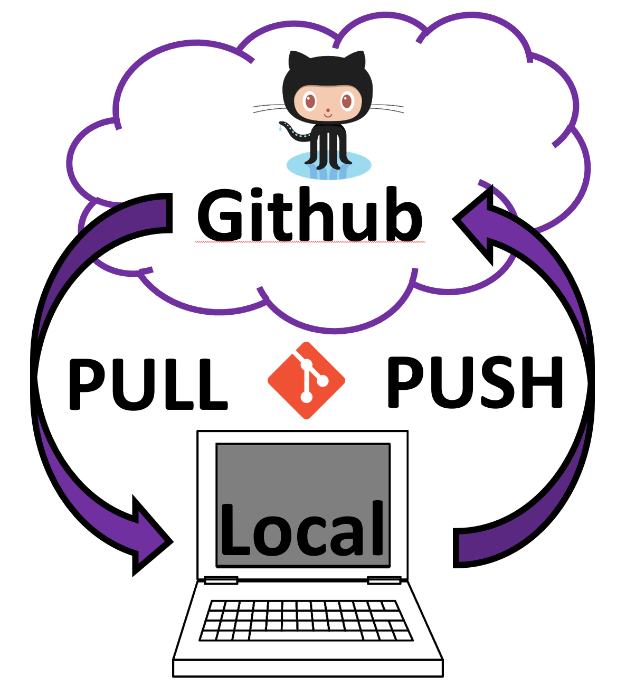
Next we'll connect to Github and PULL a copy of your new repository "MyFirstRepo" to your local drive C:\RepTemplates
In your Git Bash Window you will use the git clone command. However, you also need the URL address for the repository. The easiest way to look this up is to go back to your Github account, click on the "MyFirstRepo" repository. Then click on the green button to "Clone or Download" to see the URL, then click the button on the right to "Copy the URL to the clipboard"
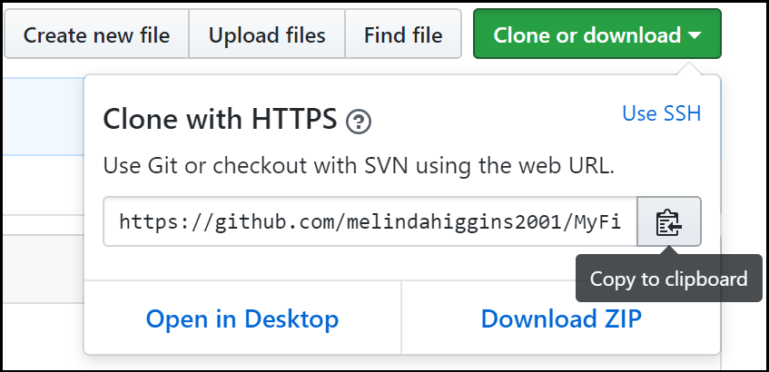
For this first "Clone" of your Github repository, you will PULL the content from your Github repository down to your local computer.
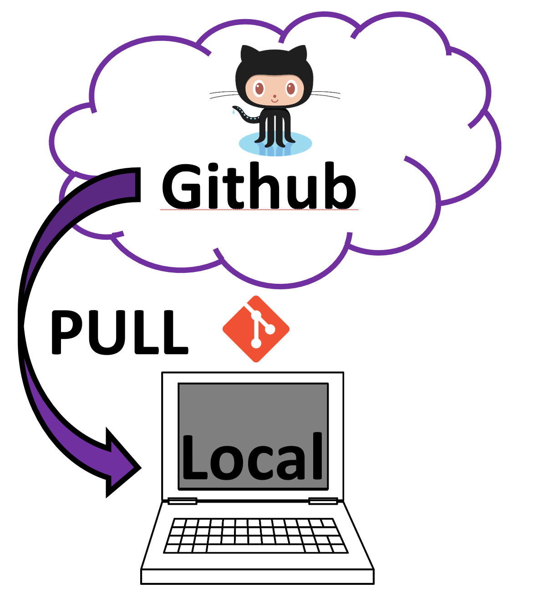
In the Bit Bash window, type the git commands listed below - Be sure to use YOUR URL to YOUR Github Repo "MyFirstRepo".
If everything works fine, when you first type ls which "lists" the content of the directory, you should see that a new directory was created for your new repository MyFirstRepo under the C:\RepTemplates directory.
Then you can cd "change directory" to MyFirstRepo and run ls again to see the one file in your repository README.cd.
git clone https://github.com/YOUR-USERNAME/MyFirstRepo.git ls cd MyFirstRepo ls
… see next slide …
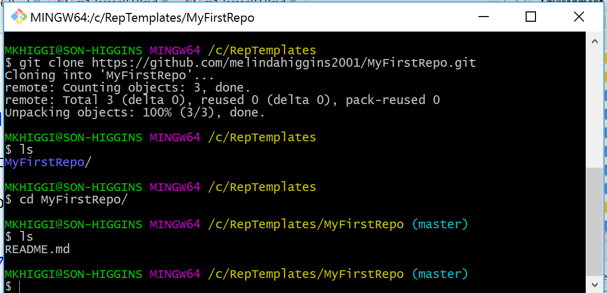
Congratulations!! You are now connected to Github with Version Control using Git.
Let's do this again using RStudio…
Make sure you are logged into your Github account at https://github.com.
Start RStudio and keep it open
In RStudio, go to the Menu at the top for Tools/Global Options - Click on Git/SVN
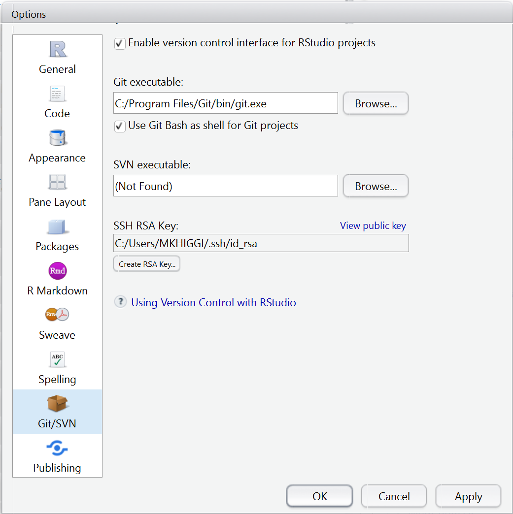
Make sure "Enable version control interface for RStudio projects" is checked
Git executable - find where git.exe is on your local drive - this is the executable file which runs Git. Mine is located at "C:/Program Files/Git/bin/git.exe"
We will not be using SVN so this is "not found" or blank
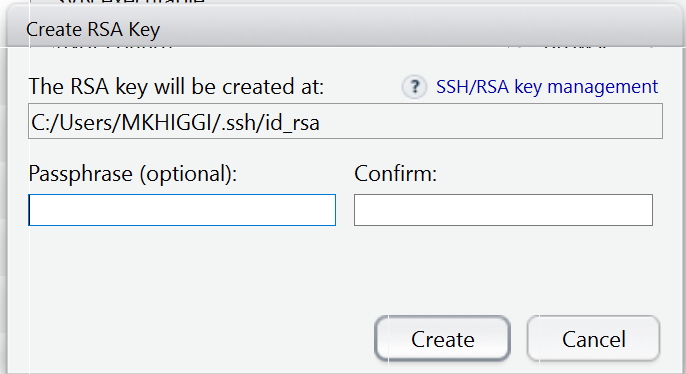
Go back to your Git Bash window and check to see if Git also sees your new SSH key.
In your Git Bash window type ls -al ~/.ssh
You should now see a pair of files listed like id_rsa and id_rsa.pub
See Section 12.2 in "Happy Git and Github for the useR" http://happygitwithr.com/ssh-keys.html
you can also click the ? Using Version Control with RStudio to get to RStudio's help website
pwd for a quick check, pwd stands for "path with directory")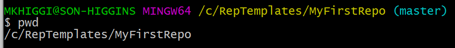
git config --global --list
id_rsa and id_rsa.pub listed - type this in your Git Bash windowls -al ~/.ssh
NOTE: If you still get errors there is a chance you might have a credentialling conflict. If you have multiple Github accounts and switch between them, sometimes you have to remove the previous credentials and re-add your credentials for the other account. Search Stack Overflow and Github documentation for help.
Go back to RStudio
Click File/New Project
Choose the "Version Control" option
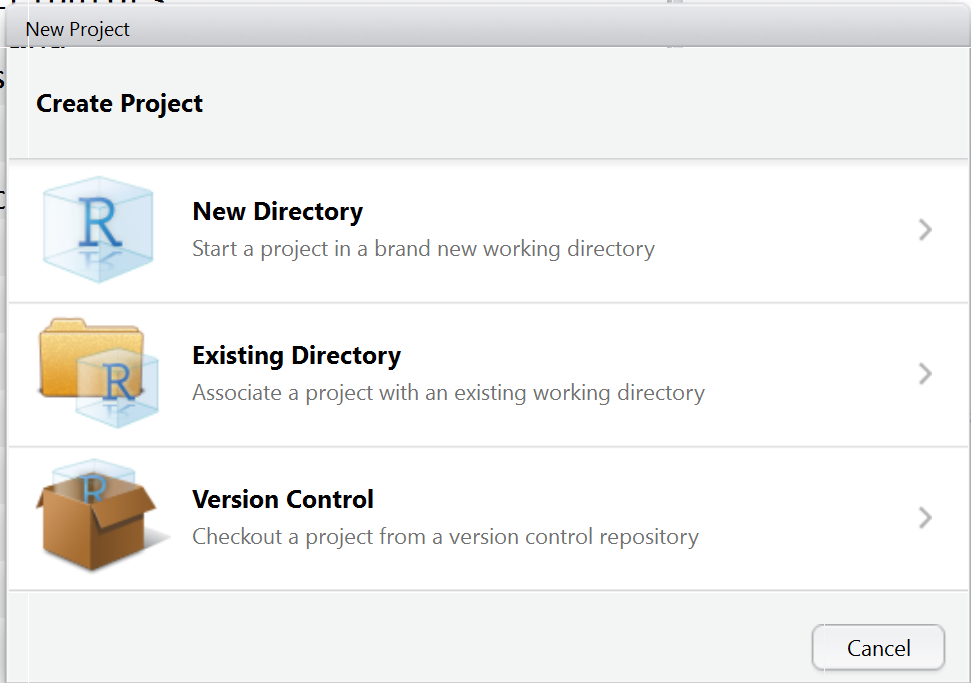
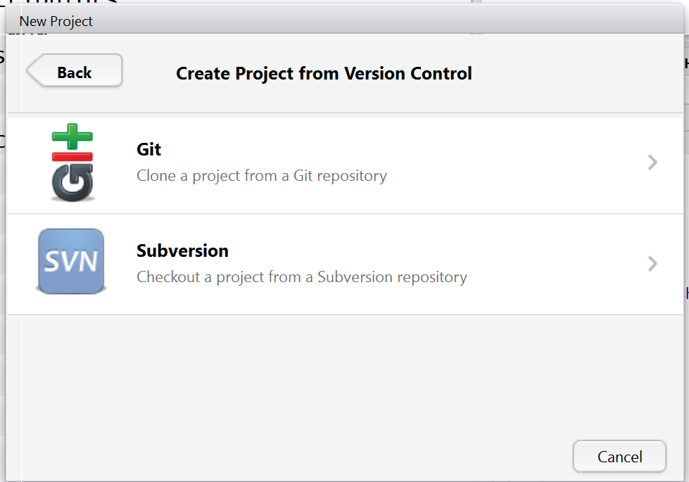
Go back to RStudio paste the URL into the New Project dialog box on the 1st line for Repository URL - notice that the 2nd line is autopopulated - use these defaults.
Check the directory locations on the 3rd line "Create project as a subdirectory of:" We have C:\RepTemplates If needed Browse to another location on your local drive.
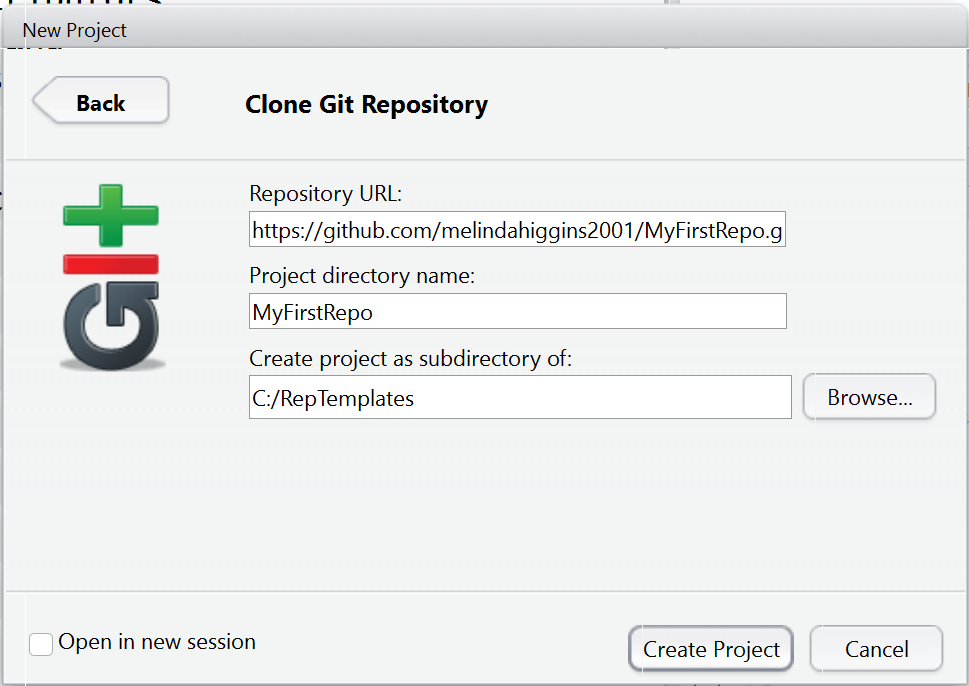
If you got an error like this one…
Don't Panic.
This ERROR occurred because we've already cloned this repository previously using git
Go to your file directory on your local computer and DELETE the previous clone of C:\RepTemplates\MyFirstRepo.
Once you've deleted this directory and these files, clone the repository again… (see next slide)
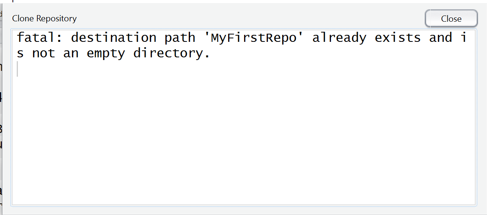
In RStudio, run through File/New Project/Version Control/Git/ and put in the URL for the repository again, click "Create Project" - this time it should work.
git clone https://github.com/YOUR-USERNAME/YOUR-REPOSITORY.git but now RStudio did the git commands for you.git commands!!.gitignore - this has some git instructions on what files to ignoreMyFirstRepo.Rproj - this has some settings on your new RStudio project setupREADME.md - this is only file in your current Github repository - it is in plain markdown format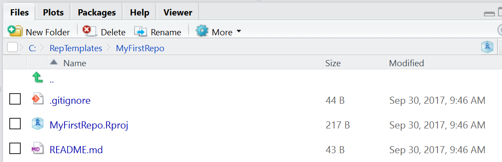
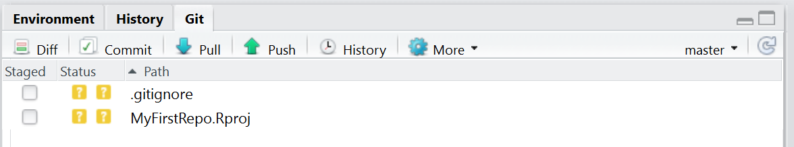
git TAB at top left - it shows that the .gitignore and MyFirstRepo.Rproj files are new since they were created by RStudio when you created the new project - these files are currently on your local drive and NOT (yet) in the Github repository.README.md file - it will open up in the RStudio editor window at the top left.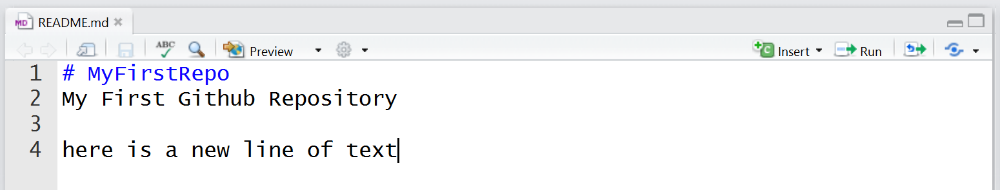
Notice that in the git TAB it shows that the README.md file has changed (or been modified) - this is indicated by the little blue "M" icon next to README.md
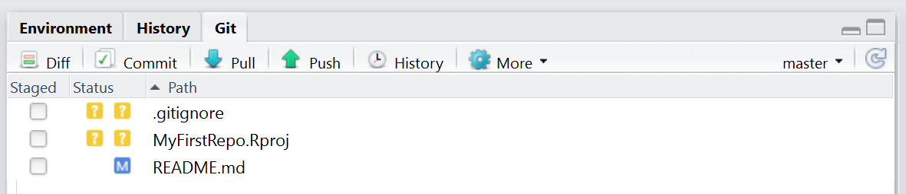
We will follow a workflow process of "Stage" -> "Commit" -> "PUSH" which is analogous to online shopping where you put items in your shopping cart, review your order, and then place your order.
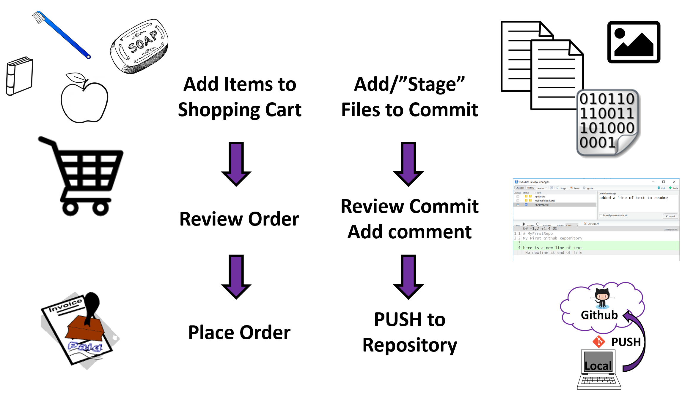
Go back and look at the README.md file in your Github repository back in your browser - notice it does not have the new line of text. This is because we have not yet committed our changes to the Github repository.
To add (or "Stage") your changes just made on your local drive using RStudio, we need to commit our changes to the README.md file and then PUSH them to your Github repository
Click the box next to README.md to "stage" (or "add") your changes
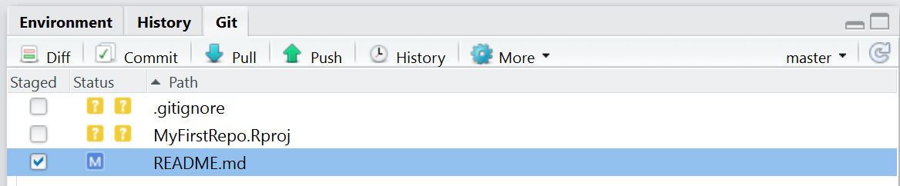
Click "Commit"
This opens another dialog window showing the changes you made to your README.md file. This gives you a chance to review the changes you made and make sure you want to keep them - this is one last review, like reviewing your order before you place it.
You should also type in a comment here about what this commit will change in your repository (i.e. files added, changed or deleted and why).
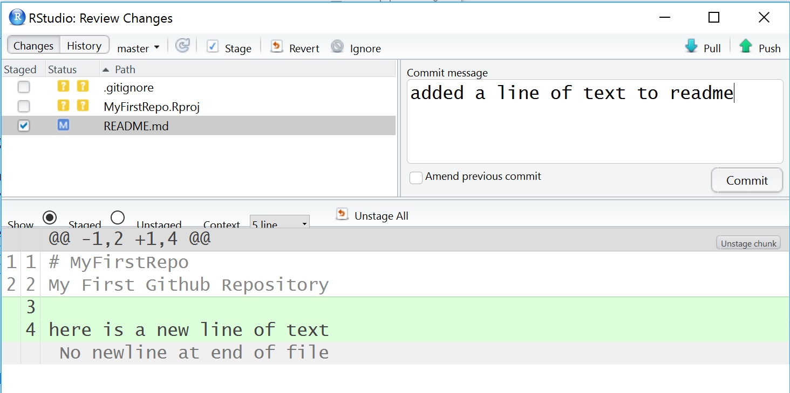
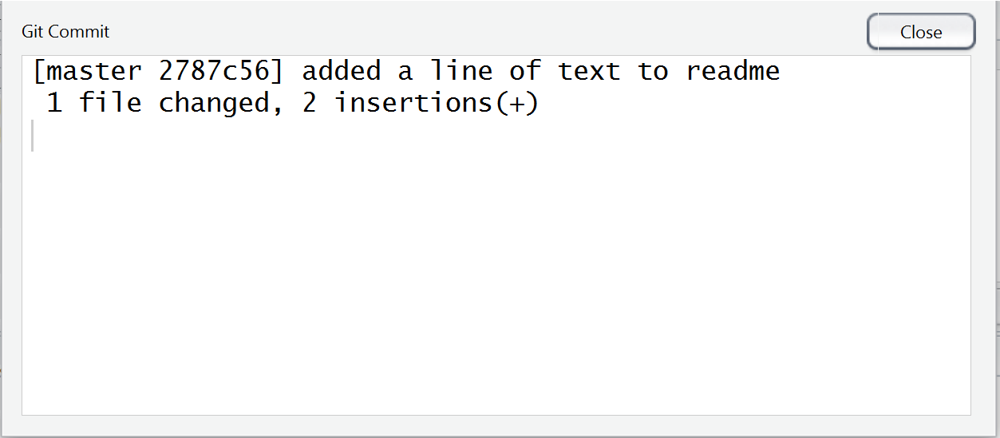
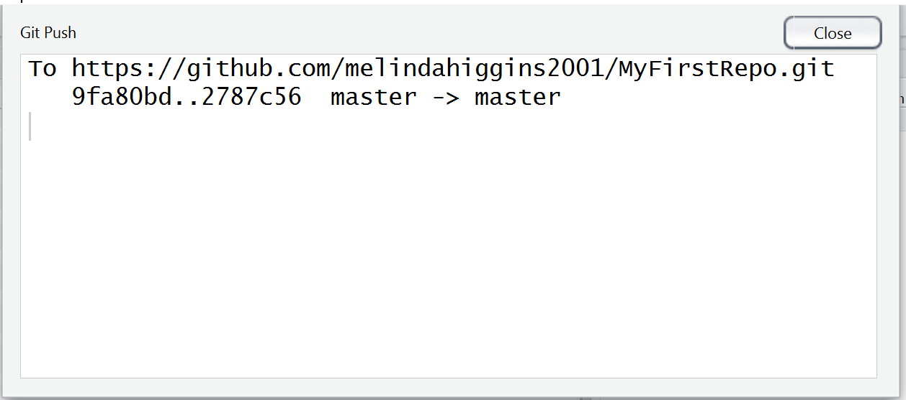
README.md file.
BEFORE
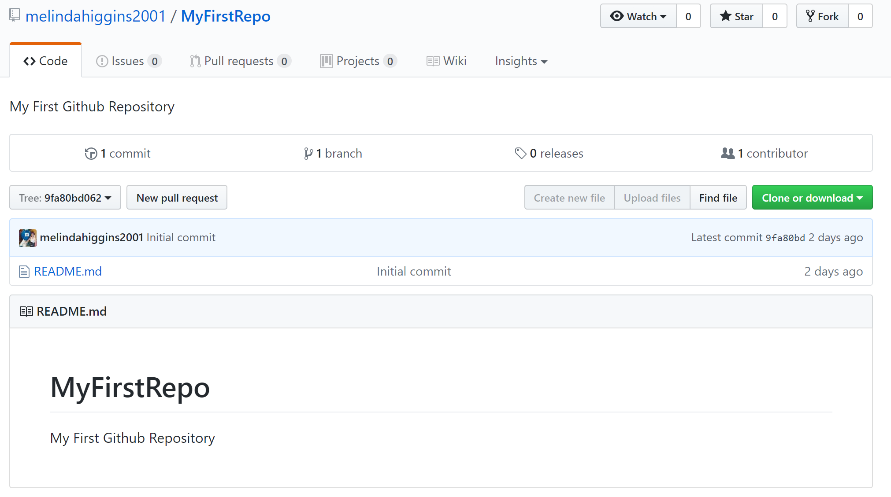
AFTER
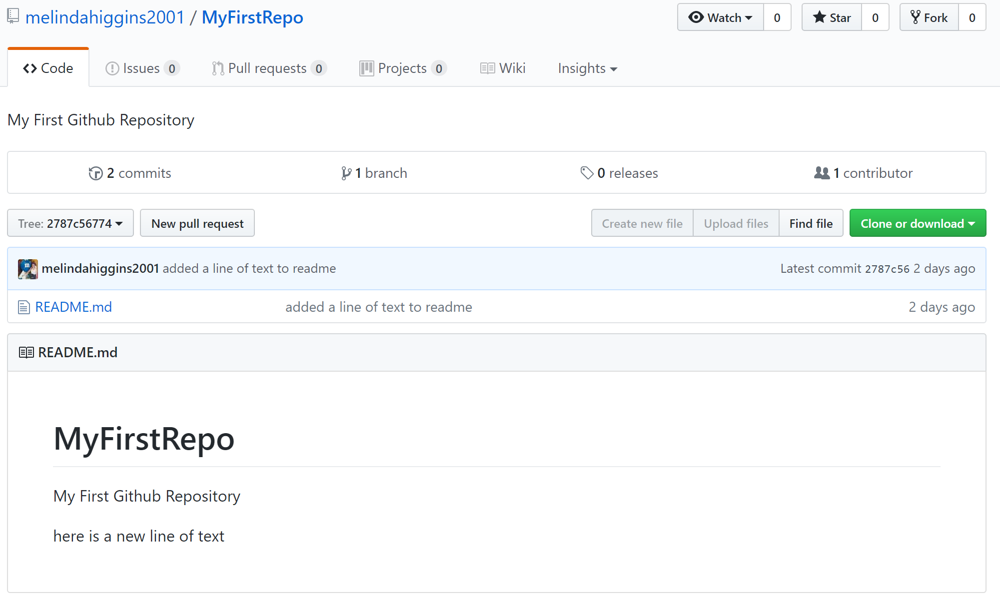
Go to your browser window for your Github repository
Notice that there is a commit message "added a line of text to readme" with a date/time stamp listed on when this change was made.
click on the README.md file - it will open this file in the browser window
In this window you have the option to view the RAW README.md file, which is basically text
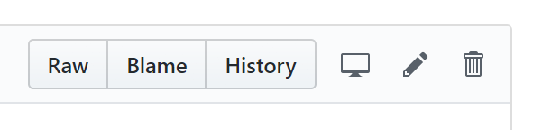
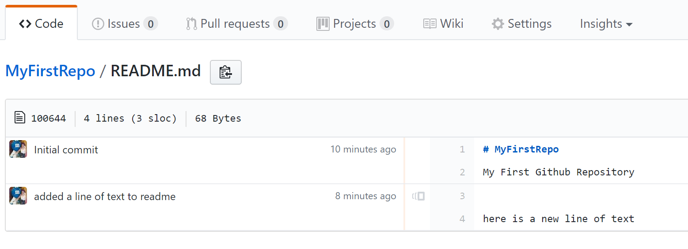
Click HISTORY to also see details on each commit - from here you can browse to that point in time to see what the repository looked like when that change was made.
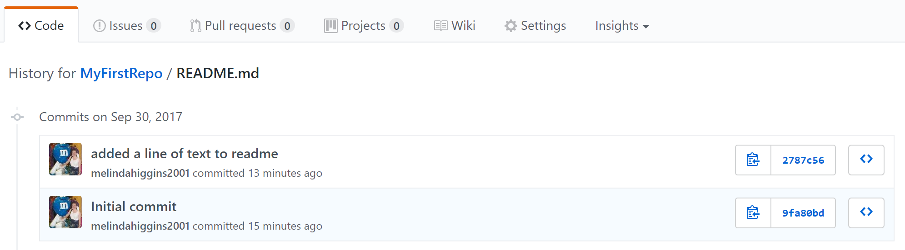
Learn more: https://help.github.com/articles/github-glossary/ and https://help.github.com/
Click on README.md in your Github repository (in browser), click the icon that looks like a pencil to edit README.md 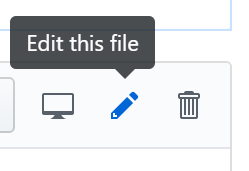
Type in another line of text to change the README.md file online in your Github repository
Scroll down to the bottom of the page, type in a short message about what you changed - click "Commit Changes"
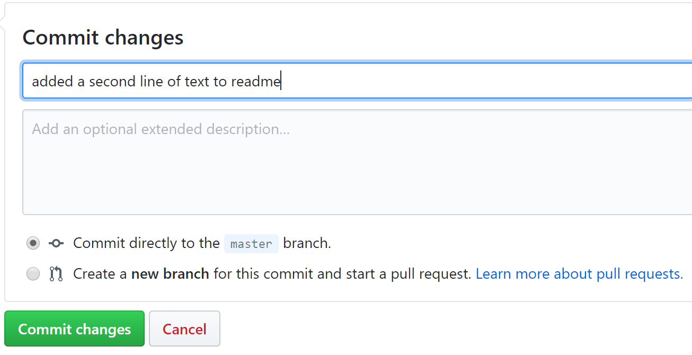
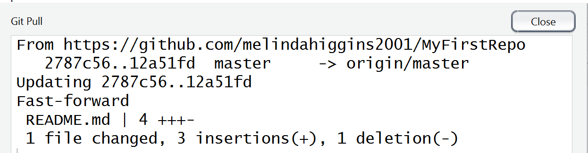
README.md file inside RStudio.TADA! You are now successfully using version control!
Sometimes using the interface to Git inside RStudio can be cumbersome and slow and when handling a lot of changes or a lot of files at once, it can crash or hang-up. So, the Git command line is often useful to also know how to use.
Let's make another change to your README.md file, but this time, we'll Stage, Commit and PUSH the changes using the Git Bash window
README.md file and save your changes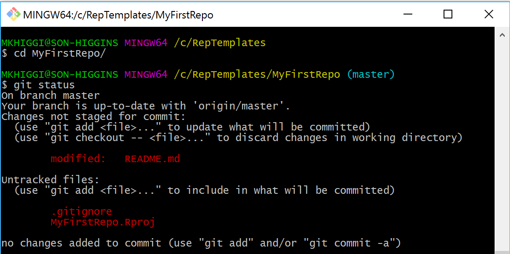
git status and you should see the files that have changed on your local drive (red text in window above) that are different from what is in the Github repository."Stage" your changes using git add .
"Commit" your changes using git commit -m "add third line of text to readme"
"Push" your changes using git push
Check to see if everything sync'd back up git status
Success!
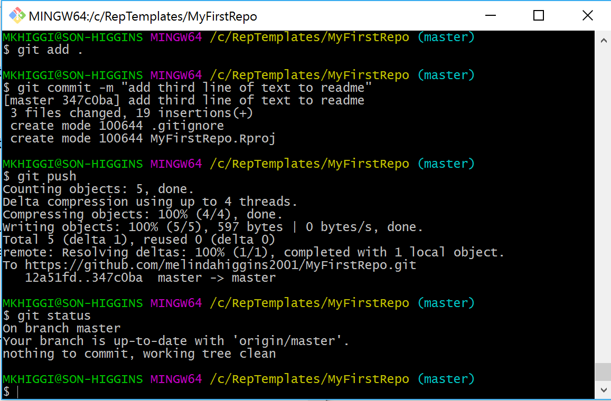
If you made changes in the Github repository online and you want to PULL the local changes down, make sure you are in the correct folder and then simply type git pull in your Git Bash window and the changes will sync up with local drive.
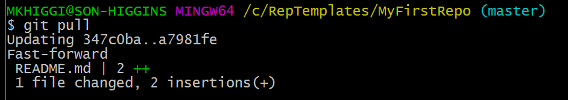
It is not a question of "IF" but "WHEN" everything goes wrong and the Git process stops working. Read Chapter 26: "Burn it all down" in "Happy Git and Github for the useR", http://happygitwithr.com/burn.html
If/When something really goes wrong:
Besides using Git either from the Git Bash command line or from inside RStudio, there are many other clients (software) that can be used.
If you plan to use more extensive version control or plan to use this approach working in teams, I highly encourage you to explore more full featured Git clients.
Jenny Bryan covers these very well in Chapter 9 "Install a Git Client" in "Happy Git and Github for the userR"
Her two top recommendations are:
For this course, the RStudio interface and the Git Bash window will be sufficient. You should only need a basic understanding of Git to complete this course. But I encourage you to explore these other Git clients for future projects.
Jenny Bryan's "Happy Git and Github for the useR" http://happygitwithr.com/ is a wealth of knowledge and a great place to start for everything necessary linking Git and Github with RStudio.
You can also seek help at:
I know this was a long lesson, but, hopefully, you now have all of the software installed and working and have worked through the issues getting Git and Github working and linked into your RStudio setup.
Feel proud this is a major milestone!!
rmarkdown